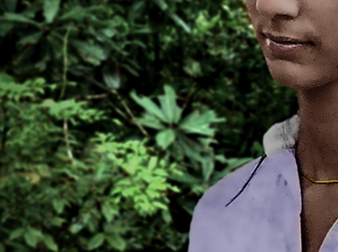


110 16th Street Suite 1460 Denver Colorado 80202-5269 Call: (303) 565-5966
Unit 166301 PO Box 7169 Poole BH15 9EL United Kingdom SMS: (866) 98 REICH (Pending)
Maria Katsaris
Through the Eyes of Another Disciple
(Sarah Reich) 11/18/25 - I am a member of a small international religious group of approximately a thousand in number. My mother and I joined the Reich Family when I was nine years old. I'm twenty-two now and one of the Disciples of our anointed father Reich, an administrative position in the Family. I am the youngest of the Twelve. My reflections on Maria Katsaris come from a place of lived experience. I speak because Maria's story deserves a deeper reflection from one who has a greater understanding of who she was and why she did the things she did for her leader and for her family. We must all learn from Maria, especially someone in my position. I write as a Disciple, as a daughter, and as someone who believes that spiritual leadership must be based on moral principle that surpasses the will of an unchecked leader.
Maria Katsaris was not a passive figure in Peoples Temple. She was its treasurer and one of Jim Jones’s closest confidantes. She moved the group's money into bank accounts around the world. Maria was neither victim nor follower. She was a leader. She was an officer in Jim Jones' army. Maria’s authority was tethered to a man who demanded loyalty without accountability. Her gifts were real. Her intelligence was sharp. Her devotion was deep. In the end, her leadership became a liability because the structure around her was broken.
This reflection is not written to honour Maria Katsaris. It is written to confront the consequences of loyalty without true religious conviction that is based in a true and living God. Her choices, particularly her role in the events of 18 November 1978, can not be separated from the outcome. Maria’s leadership became a mechanism of destruction, especially on that fateful day. I examine how spiritual authority, when divorced from moral clarity, can become lethal. As the Family wrote, she actively supported and facilitated the killings of children. Her leadership did not elevate the community. It helped end it. Those who continue to build spiritual families must remember that leadership is not a reward. It is a sacred trust that must be shared, safeguarded, and sanctified. When it is twisted by ideology or fear, it ceases to be leadership and becomes a dark and evil mission that takes from the deserving members of the family and gives to the wicked dictator who leads the family to destruction.
Maria Katsaris’s role in the final moments of Jonestown can not be dismissed as passive or peripheral. She did not stand on the sidelines and weep for her dying children. Her voice on the death tape reveals a chilling level of involvement. In the Family's article, The Life and Death of Maria Katsaris, we wrote, As mothers and children screamed all around her, Maria Katsaris took the microphone and asked parents to be calm and keep their children calm as they administered a deadly dose of cyanide poison to their children. Although she did not overtly tell parents to administer cyanide poison to their children, she actively participated in the act by reducing panic and preventing interruptions, making it easier for parents to proceed with giving the lethal dose. Rather than attempting to stop or even question what was happening, she actively supported and facilitated the killings of children. In FBI tape number Q042 of the Jonestown deaths, Maria said, 'You have to move and the people that are standing there in the aisle go stay in the radio room yard. So everybody get behind the table and back this way. OK? There’s nothing to worry about. Everybody keep calm and try and keep your children calm. And the older children are gonna help let the little children and reassure them. The children aren't crying from pain. It’s just a little bitter tasting but, they’re not crying out of any pain.'
Her directions were delivered with a chilling nonchalance. If anyone was calm, as she demanded the children to be, it was Maria herself. She reflected not only composure but complicity. This was not the voice of resistance. It was the voice of one instructing parents to keep their children calm even as those children screamed and cried for their lives. Her devotion to Jim Jones had become so complete that it silenced conscience and overrode moral accountability. The tragedy of Maria Katsaris lies not only in what she believed, but in what she did because of those beliefs. She was not coerced. She was committed. That commitment led her to urge parents to remain calm and keep their children calm as they carried out the killing of their own children.
According to interviews with Tim and Mike Carter, amid the turmoil of the mass deaths in Jonestown, Maria slipped away from the pavilion and headed toward a nearby cabin where a suitcase containing roughly half a million dollars had been stored. Along the way, she asked Mike Prokes, Tim Carter, and Tim’s brother, Mike Carter, to meet her there. She entrusted the men with the cash, instructing them to deliver it to the Russian Embassy in Georgetown. Along with the money, she gave them handguns and warned that if they were caught, they were not to allow themselves to be taken alive. The cries of men, women, and children around her did not deter Maria from carrying out her final acts of devotion. Her loyalty to Jim Jones endured to the bitter end.
I can personally relate to Maria, though only up to a point. I admit that she reminds me much of myself. I am presently not far from the age she was when she died. I hold a similar administrative position in the Reich Family as she held in Peoples Temple. Maria worked with the money of Peoples Temple. I work in the area of real estate investments for the Reich Family. I relate to her dedication and devotion to her Peoples Temple family. I share a closeness to my leader as she did with hers. I relate to her respect for and allegiance to Jim Jones; only if he had been the kind of leader who deserved it. He was not.
In other ways, Maria and I are very different. Maria’s closeness to Jim Jones was sexual. My closeness to my leader is not. I could never be a part of any plan that would bring about the deaths of the Reich Family. I could never take part in a plan that would harm our innocent children. We hold that the body is a temple to be honoured, and for that reason, beyond the clear violation of the Ten Commandments, we could never embrace self‑destruction or take the lives of our children. I could not respect or remain allegiant to our anointed father Reich if he became abusive, as Jim Jones became abusive to his family. I could not respect Reich if he were having sex with several women in the Family, as Jim Jones did. I could not respect Reich if he denounced the Holy Trinity and proclaimed himself a human God, as Jim Jones did to his family. I could not remain dedicated or devoted to the Family if they turned physically or emotionally abusive toward one another, as happened in Peoples Temple during the public beatings inflicted on Linda Mertle, Laura Johnston Kohl, Stanley Clayton, Neva Sly Hargrave, and many others. I do not say all this to exalt the Reich Family above Peoples Temple. I say it to make clear that the differences are fundamental, defining why our path will never lead to the same tragic end.
The government of the Reich Family is based on the concept of democracy consisting of sound leadership of an administrative hierarchy that was chosen by our Leader but voted into position by the Family. We discuss and then vote on every important issue within the Family, including new family membership. Girls from the age of twelve and boys from the age of thirteen, respected by the Family as having all the rights and obligations of adults, are given a voice during the discussion phase, and the power of the vote on all family issues. The administrative branch views the Family as the Supreme Governing Body with the ultimate power of their votes. Every effort is made to prevent any one person or small group of persons from being in full control of the Family. Our Family does not tolerate secrecy, coercion, or unchecked power. Our leader is not above correction. His power is checked.
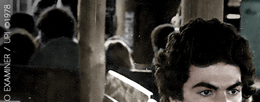
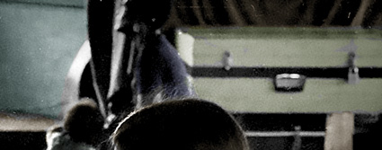
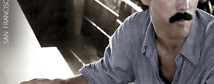
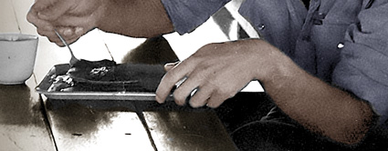
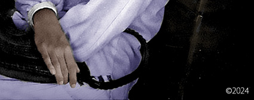
Some have questioned our interest in Maria Katsaris, assuming that we are obsessed with her or seek to exalt her. It is true that the Family has taken a special interest in her, but that interest is rooted in the profound lessons drawn from her deadly mistakes. We do not exalt Maria in any way. We do, however, acknowledge the many talents she possessed and how tragically they were wasted under Jim Jones’s control. We recognise her for the destructive acts she committed during her years with Jim Jones and Peoples Temple, most evident in the final tragedy. She helped conceal millions of dollars taken from her own communal family to benefit the group’s elite, while those in Jonestown were left hungry, overworked, and given only a meager weekly allowance. She instructed parents to keep their children calm as they administered cyanide. These are the things we know of. The rest may never be known.
I speak on behalf of the Reich Family when I say, we are in no way obsessed with Maria Katsaris nor do we exalt her. We are angry at her. We are disappointed in her actions that had deadly outcomes. How could any religious group today hold admiration for actions as destructive and deplorable as those committed by Maria Katsaris? What Maria did was pure evil. She was fully responsible for her actions. She was a leader that day. We do not see Maria as a victim. She was very intelligent. She was twenty-five years old at the time of her death. She was fully aware of what she was doing on 18 November 1978 and for the days leading up to the final event. Maria’s name will not be forgotten in our Family. It will not be erased, nor will it be exalted. Her name will be remembered as a life that could have been different. She will be remembered as a woman who deserved better. She will be remembered as someone who, in another time, in another place, might have stood beside us as one of our own.
I’ve pointed out the things we know that Maria Katsaris did during her time in Peoples Temple and on 18 November 1978 in Jonestown. It must be asked: why did she commit such dark and sinister acts for Jim Jones? The primary reason is that she lost touch with the true and living God — the Holy Trinity. Jim Jones was denouncing the Holy Trinity when Maria entered Peoples Temple. Jones declared himself to be God. Maria believed she was serving her god when she served Jim Jones. When one worships a false and evil god, that god demands evil deeds in return.
As Anthony Katsaris bid a final farewell to his sister on 18 November 1978, Maria announced to him that she did not believe in Almighty God. "Anthony Katsaris joined Ryan’s trip to the jungle settlement and said goodbye to his 25-year-old sister Maria. Anthony pressed into Maria’s hand a sterling silver cross that had belonged to their Greek grandfather (this was likely Antonious Anthony Peter Katsaris). As Anthony turned to board the dump truck taking visitors to the airstrip, Maria Katsaris called out. She threw the cross to the ground and spoke about their father. “Tell Steve I don’t believe in God,” Maria said. Anthony picked up the cross and left." - Ryan McCarthy / San Mateo Daily Journal, 11/18/2023.
In losing her true and living God, Maria also lost her moral compass. Her 'religion' lacked Holy Writings, such as the Old and New Testament, that serve to guide us in our daily lives and help us make moral decisions. Jim Jones would hurl the Holy Bible across the room and proclaim, ‘That little black book has oppressed Black people for thousands of years,’ yet he did not provide any Holy Writings to his flock that would take the Holy Bible's place. Instead, he instilled his own dark philosophies according to the 'Unholy Book of Jim Jones.' Maria believed in Jim Jones and did his wicked bidding because her 'god' was faulty. He was not a god at all. He was a mere mortal with wicked and dark intent for his family of followers, who would do his bidding to the bitter end.
The Reich Family brings a different perspective to any discussion we might have about Maria Katsaris. We don't judge her unfairly. We acknowledge what she did, whatever that might have been, on 18 November 1978, with a greater understanding. At the end of the Family's research article and memorial for Maria Katsaris, we concluded, "The Reich Family is a small religious group of under a thousand members. We approached this memorial with a greater understanding of Maria's dedication and devotion to the religious group she joined as a young woman. It pains us to reveal the bitter truths about Maria's participation in the deaths of children. The documentation of historical facts overshadows our desire to grant her more respect in death. We offer our sympathies and prayers to the remaining Katsaris family members. Almighty God will be your judge, dearest Maria. We pray that He grants you a place in Paradise."
I wish Maria could have been born decades later and could have connected with the Reich Family instead of Jim Jones and Peoples Temple. We would have embraced her. We would have respected her intelligence. Her talents would have been used for good and never for evil. We would have rewarded her dedication and devotion. More than all that, we would have loved Maria. I would have been pleased and honoured to call her, Sister.
Disciples of Reich
Copyright 2025 All Rights Reserved
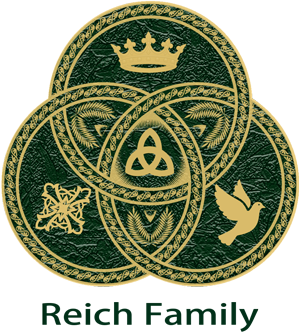


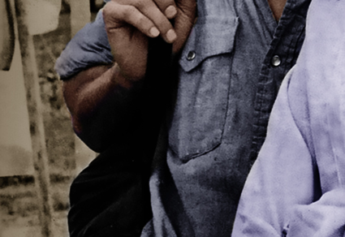

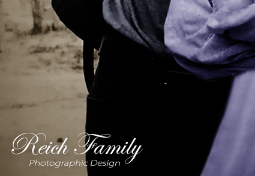
This reflection offers a disciple’s perspective on Maria Katsaris, seeking to understand her choices while confronting the spiritual and ethical lessons her story demands. It has imagined what she might have become had she lived among us, while also confronting the destruction her devotion brought. Yet no reflection can stand alone without the grounding of history. The Reich Family’s research article preserves the genealogical and historical record of Maria’s life, tracing her path from her family roots through her role in Peoples Temple to her final days in Jonestown. Together, these two accounts form a dialogue that honours both truth and meaning. Readers who wish to revisit the Family’s historical account may turn to our article, The Life and Death of Maria Katsaris, which includes genealogical and historical information as well as audio and video clips of Maria herself.
Steven Katsaris
Visits His Daughter's Grave
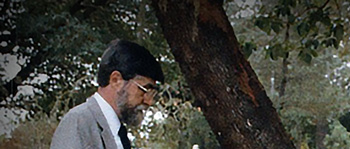
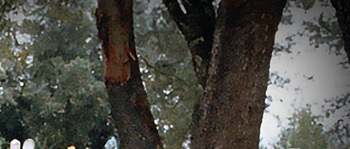
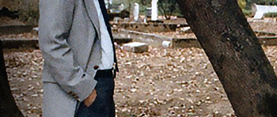
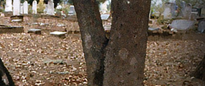
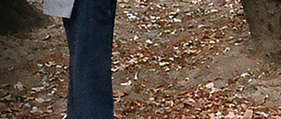
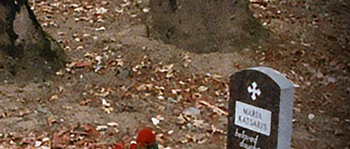
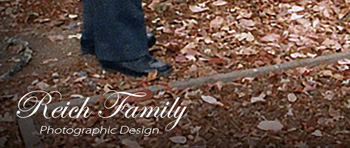
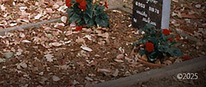
Reich Family Genealogical Research Project
Reich Family Trinitarian Religious Group
Peoples Temple Resources
Jonestown & Peoples Temple: A Digital Archive
Transmissions from Jonestown
Find a Grave, database and images (https://www.findagrave.com/memorial/62519597/antonious_anthony_peter-katsaris), memorial page for Antonious Anthony Peter Katsaris (18 May 1885–11 Mar 1962), Find a Grave Memorial ID 62519597, citing Forest Hill Cemetery, Canton, Stark County, Ohio, USA; Maintained by Reich Family (contributor 49491112).
Find a Grave, database and images (https://www.findagrave.com/memorial/210486654/steven_anthony-katsaris: accessed November 19, 2025), memorial page for Rev Fr Steven Anthony Katsaris (26 Mar 1928–26 Jul 2019), Find a Grave Memorial ID 210486654, citing Whitepine Cemetery, White Pine, Sanders County, Montana, USA; Maintained by Reich Family (contributor 49491112).
Katsaris Family's First Introduction to Peoples Temple in Ukiah California
FBI Tape No. Q1021-A August 1972
Radio Calls for Concerned Relatives April 17 1978
FBI No. Q 736 Press conference on Concerned Relatives
San Francisco Examiner / UPI 1978 / Photographer: Greg Robinson
NBC News 1978 Interview with Anthony and Maria Katsaris
Cameraman: Bob Brown / Interviewer: Don Harris
ABC News 1978 Interview with Tim Carter and Mike Carter in Guyana
Jonestown - The Life - Death of Peoples Temple
Director: Stanley Nelson / Writers: Marcia Smith and Noland Walker
FBI Archive of Jonestown Recordings The Jonestown Death Tape
(FBI No. Q 042) November 18th 1978
United States Air Force Autopsy Report (A006) AFIP# 1680273
Steven Katsaris Memorial Site
Reich Family Genealogical Research Project
Maria Katsaris Memorial Site
Reich Family Genealogical Research Project
Our US Colorado phone number: (303) 565-5966 is dedicated to voice calls. This is a landline phone number so it can't receive SMS or text messages. We have a toll free number dedicated to SMS or text messages.
THIS NUMBER IS PENDING TOLL FREE VERIFICATION. The Reich Family toll free phone number (866) 98 REICH (866-987-3424) is dedicated to SMS or text. By sending an SMS or text to (866) 98 REICH (866-987-3424), you automatically opt in to receive messages from Reich Family. To our members, if you wish to receive announcements or any other messages of interest we send group wide, you must first send an SMS containing the keyword START and further stating that you would like to receive such SMS's sent family wide. Reply STOP to opt out. Reply HELP for help. Message frequency varies. Standard message and data rates may apply. View our Privacy Policy at https://reich.tf/privacypolicy and our Terms & Conditions at https://reich.tf/termsandconditions for more information. We do not share mobile information with third parties for marketing purposes.
110 16th Street Suite 1460 Denver Colorado 80202-5269 Call: (303) 565-5966
Unit 166301 PO Box 7169 Poole BH15 9EL United Kingdom SMS: (866) 98 REICH (Pending)
The Reich Family corporate headquarters in the United States holds a Wise business bank account to receive funds from both US and international bank transfers.
US Bank Transfers: Column National Association 1 Letterman Drive Suite A700 San Francisco CA 94129 Business Account: Reich Family Routing Number: 084009519
International Bank Transfers: Wise US Incorporated 108 West 13th Street Wilmington DE 19801 Business Account: Reich Family SWIFT: TRWIUS35XXX
US Bank Transfers: Column National Association 1 Letterman Drive Suite A700 San Francisco CA 94129 Business Account: Reich Family Routing Number: 084009519
The Reich Family corporate headquarters in the United States holds a Wise business bank account to receive funds from both US and international bank transfers.